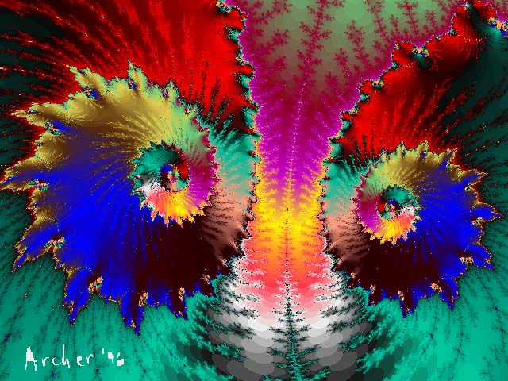
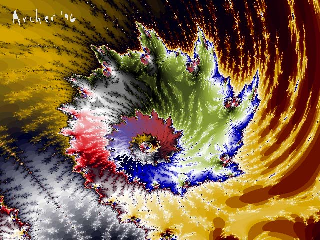

Two dynamic and highly pixellated fractals
These images were drawn by a fractal formula written by the artist
and are projected here at a resolution of 640 x 480
so that their detail may be more visible. This page may render
somewhat slower than other pages on my site. But there are only
two images, so please be patient.
|
 |
#1385 Wild & wooly
|
 |
#1386 Wild & wooly
Return to
Don Archer Digital Art